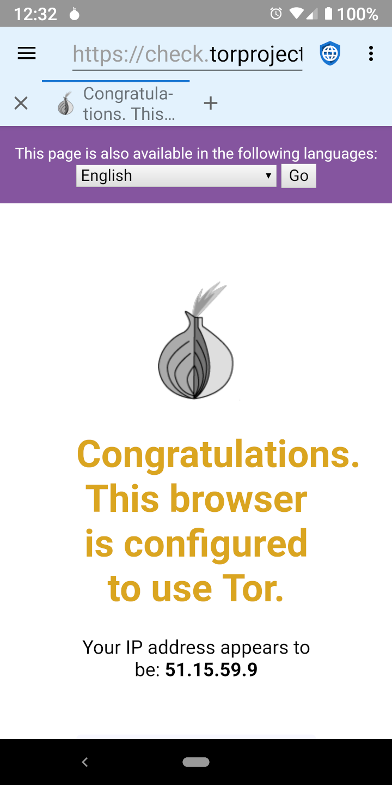

Tor and Its Limits Tor and Its Limits
Tor and Its Limits Tor and Its LimitsThere are two general categories of bad actors that want to infringe on the privacy of the web: malicious governments with access to ISPs (Internet Service Providers) and mega corporations that run social and advertising networks. TOR (The Onion Router) is useful in protecting privacy from malicious governments (which spy on traffic in transit) but not from mega corporations (which embed malicious code on web servers).
 Malicious Governments
Malicious GovernmentsMalicious governments often spy on their citizens to punish dissent or human rights activity. They commonly either operate the local ISPs or they can force them to disclose information showing every IP address that is visited by each user. Tor is designed to defeat this infringement of privacy by encrypting the traffic from a user’s device and routing it through three separate servers on the internet before sending it on to the final destination. This means that no individual ISP, server, or website, can know both the IP address the user’s device and the IP address of the final web server. Malicious governments and the ISPs they control cannot tell which web servers a user is accessing, although they can tell that the user is using Tor. In some parts of the world, using Tor could be construed as an evidence of illegal behavior (“if you didn’t have anything to hide you wouldn’t be encrypting your traffic”) and users could be punished because governments assume they are doing something that is prohibited. Thus, Tor can be helpful, but isn’t a panacea.
Mega CorporationsWhen a user connects to a web server, the web server can see the user’s IP address. Although it isn’t a perfect science, IP addresses can be turned into physical addresses with a fair amount of accuracy. Small web servers typically rely on IP addresses to identify the location of the users visiting their site. Tor is a good solution to mask the user’s location from these servers. But large mega corporations that own social media and advertising networks use a whole profile of information that is designed to track users across devices and IP addresses. These profiles employ a variety of techniques to identify users, including JavaScript, cookies, tracking IDs, and browser fingerprinting. Because the vast majority of the websites on the internet either load an ad from one of the major networks or embed social media icons with their associated JavaScript, these corporations have built profiles for almost every user online and can track their internet activity across unrelated sites.
They track every site that is visited, everything that is purchased, every credit card that is used to make a purchase, every address that items are shipped to, and the GPS metadata of every picture that is uploaded to the internet. They build a profile of a user’s age, gender, marital status, address, political affiliations, religious affiliations, family circumstances, number of pets, and everything else they can get their hands on. They even buy up databases of credit card transactions at local stores, so they can track the off-line purchasing patterns of the users in their profiles. Because they already have much more accurate address information about a user than an IP address discloses, Tor provides no real privacy protection against mega corporations.
The single best privacy protection against mega corporations is to browse the web with JavaScript disabled, followed by blocking ad networks, disabling cookies and DOM storage, and using a browser that is difficult to fingerprint.
 Using Tor
Using TorDespite its limitations, Tor can be useful in some circumstances. The Tor project has an app for Android called Orbot, which is available on F-Droid and everywhere else that Privacy Browser is distributed. Privacy Browser has a setting to use Orbot as a proxy. When this is turned on, Privacy Browser’s app bar will have a light blue background instead of the default light grey. When Privacy Browser’s Orbot proxy setting is enabled, internet access will not work unless Orbot is running and connected to Tor. Because traffic is being routed through several Tor nodes, using Tor is often much slower than connecting directly to the internet.
 Downloading Files Via Tor
Downloading Files Via TorWhen Orbot is operating in proxy mode, browsing the internet using Privacy Browser will be routed through the Tor network, but file downloads will not. This is because Privacy Browser uses Android’s builtin download manager to download files, which doesn't have a proxy option. Users who want to download files via Orbot need to enable its VPN mode.